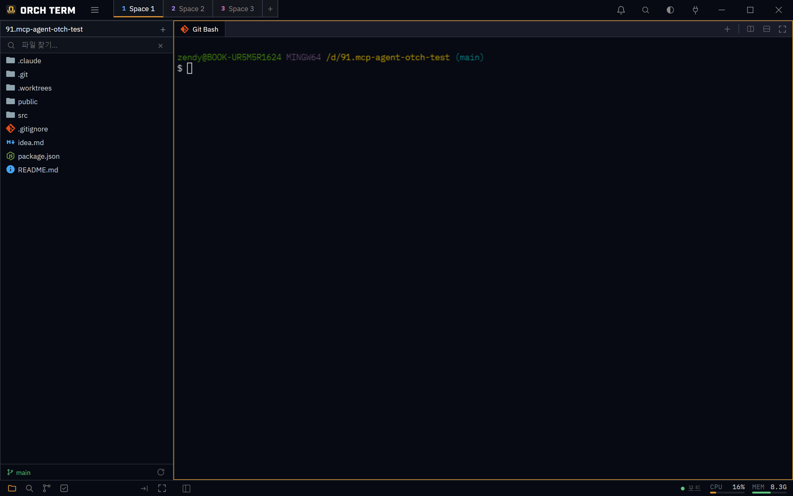
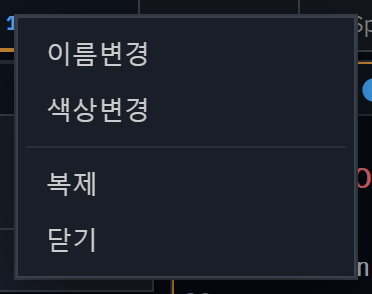

핵심 기능 · 스페이스 전환 가능한 레이아웃
스페이스
Space는 tmux·i3 워크스페이스처럼 통째로 전환되는 독립 레이아웃입니다. 각 Space가 자기 분할 트리(패널·탭)와 파일 탐색기를 따로 가져, 타이틀바 칩으로 한 번에 갈아탑니다.
Space 칩 — 타이틀바에서 전환
Space 목록은 타이틀바에 칩으로 늘어섭니다. 활성 칩은 액센트 밑줄로 강조되고, 칩 번호는 Ctrl+번호 전환 위치를 가리킵니다. 맨 끝 로 새 Space(빈 탐색기 + 터미널 1개)를 엽니다.

칩은 더블클릭으로 이름·색을 인라인 편집하고, 호버 시 뜨는 ×로 닫습니다(마지막 1개 Space는 닫기 불가). 드래그로 칩 순서를 바꾸거나, 칩 위로 탭을 드롭해 다른 Space로 옮길 수 있습니다.
전환 (Ctrl+1‥9)
칩을 클릭하거나 Ctrl+1‥9(타이틀바 위치순)로 전환합니다. 전환은 화면을 부분 갱신하는 게 아니라 레이아웃을 통째로 교체합니다. 나가는 Space의 터미널·브라우저는 그대로 살아 있어, 돌아왔을 때 진행 중이던 명령의 출력과 스크롤백이 보존됩니다.
| 키 | 동작 |
|---|---|
| Ctrl+1 ‥ 9 | 위치순으로 1‥9번째 Space로 전환 |
| 칩 클릭 | 해당 Space로 전환 |
| 칩 더블클릭 | 이름 + 색 인라인 편집 |
Space별 분할 트리 · 탐색기
각 Space가 자기 상태를 통째로 소유합니다. 전환은 그 묶음을 갈아끼우는 일입니다.
독립 분할 트리
분할 트리·활성 패널·최대화 상태를 Space마다 따로 가집니다. 한 Space는 4분할로, 다른 Space는 단일 터미널로 유지할 수 있습니다.
Space별 탐색기
자기 프로젝트 목록과 활성 프로젝트를 가집니다. 전환하면 좌측 탐색기가 그 Space의 트리로 바뀌고, 새 터미널은 활성 프로젝트 루트에서 시작합니다.
접힘 · 폭 · 모드
탐색기 접힘/폭과 사이드바 모드(파일·검색·Git)도 Space별로 기억해 전환·재시작 시 복원합니다.
우클릭 메뉴 · 전체 복제
칩을 우클릭하면 이름 변경 / 색상 변경 / 복제 / 닫기 메뉴가 열립니다. 이름·색은 더블클릭과 같은 인라인 편집기를 엽니다.

복제는 그 Space 전체(탭·프로젝트·레이아웃·색)를 새 Space로 복사하고 곧바로 전환합니다. Space가 이미 9개면 메뉴에서 비활성화됩니다.
실시간 영속화 · 복원
Space를 바꾸거나 탭·분할·프로젝트를 건드릴 때마다 상태가 자동 저장돼, 앱을 다시 켜면 레이아웃이 복원됩니다. 저장본이 깨졌으면 기본 단일 Space로 안전하게 되돌립니다.
- 구조만 저장. 터미널은 디렉터리(cwd)만 기억했다가 재시작 시 그 위치에서 새로 시작합니다(스크롤백은 소실). 에디터·브라우저 탭은 다시 열립니다.
- 커스텀 탭 이름 유지. 인라인으로 바꾼 터미널 탭 이름은 재시작 후에도 그대로 유지됩니다(아이콘은 셸 기준).
백그라운드 완료 알림
백그라운드 Space에서 돌던 작업이 끝나면, 그 Space 칩에 초록 점이 깜빡여 알려 줍니다 — 다른 Space로 가 있어도 칩만 보고 완료를 알 수 있게요.
docs) 칩 앞 깜빡이는 초록 점 = 그 Space의 작업 완료 신호.